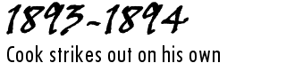
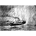
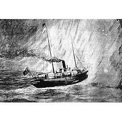
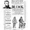
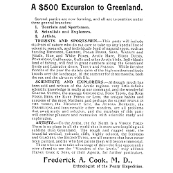
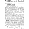
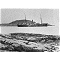
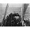
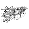

| |
|
|
|
|
|

 |
 |
 |
 He
also exhibited them along with a group of other Labrador
Eskimos, who were left stranded after Chicago’s
World’s Columbian Exposition,
at Huber’s Dime Museum in New York. After one of
the adults died, Cook
ended his shows, but appeared with Willie before the New York medical
societies,
where he gave papers on his medical observations of the North
Greenlanders.
He
also exhibited them along with a group of other Labrador
Eskimos, who were left stranded after Chicago’s
World’s Columbian Exposition,
at Huber’s Dime Museum in New York. After one of
the adults died, Cook
ended his shows, but appeared with Willie before the New York medical
societies,
where he gave papers on his medical observations of the North
Greenlanders. |
 |
 |
|
 |
|
 |
The voyage attracted well-heeled Ivy Leaguers and their illustrious
professors,
but was plagued by disaster from beginning to end. The iron
steamer Miranda, which Cook had been warned was not
appropriate for ice work, struck
an iceberg, but was not fatally holed. After repair, she reached
Greenland,
only to rip out her bottom on a sunken reef near Sukkertoppen.
Cook accompanied a boat sailed by an expert Inuit
pilot and Danish-Inuit crew 90 miles north to Holsteinborg, where he
secured
the aid of the Gloucester fisherman Rigel, which
accompanied the crippled Miranda as she attempted
to reach
home. When the Miranda foundered
in Davis Strait, all were safely transferred to the Rigel.
But Cook cleared little money over his expenses from this ill-fated
voyage.
The most notable outcome of the expedition was the formation of the
Arctic Club
by its young participants. The
Arctic Club eventually
enrolled most of the active American explorers, and in time was
absorbed
by the Explorers Club of New York.| «- 1891-92 : Peary’s North Greenland Expedition | 1895-1902 Antarctica -» |